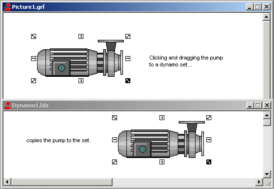

Using dynamos to customize pictures
As you develop a system of operator displays, you may want to use an object you created for one picture in several other pictures. DeltaV Operate offers a convenient way to save custom-built objects and application scripts into a higher-level reusable object set, called a dynamo. Dynamos allow you to customize your pictures by creating a consistent design across your operator displays.
DeltaV Operate provides a wide selection of pre-built dynamos that use the most common shapes and objects in the process automation industry today. You can also build and save your own dynamos using the Build Dynamo Expert.
Creating Dynamo Sets and Dynamos
A dynamo set is a collection of custom or pre-built dynamos. DeltaV Operate contains an extensive library of dynamo sets that you can use, or you can create your own. To open an existing dynamo set, open the Dynamo Sets folder from the system tree and double-click the set you want to open.
To create a dynamo set, right-click Dynamo Sets in the system tree and select New Dynamo Set. You must save the new dynamo set before you can add any dynamos to it. The new dynamo set is given an .FDS extension.
To create a new dynamo, first select on your picture the object to be made a dynamo. (Configure any animations, grouping, source definition, etc., beforehand.) Then open the dynamo set to which you want to add the new dynamo and click the Build Dynamo Expert button on the DeltaV Tools toolbar. On the Create Dynamo Expert dialog, select the dynamo set from the drop-down list of open dynamo sets, name the dynamo, and give it a version number (in x.y format). Delete the working copy of the dynamo from the picture. Refer to the Build Dynamo Expert topic for more information.
Modifying Dynamo Sets
To modify the contents of a dynamo set, select a dynamo and right-click to access the context menu. Individual dynamos can be cut, copied, deleted, etc., using the context menu options listed in the table below.
|
Use the context menu option... |
To... |
|---|---|
|
Undo |
Undo an operation. |
|
Cut |
Remove the dynamo and place it into the clipboard. |
|
Copy |
Create a duplicate copy of the dynamo and place it into the clipboard. |
|
Delete |
Remove the dynamo from the dynamo set. |
|
Duplicate |
Create a duplicate copy of the dynamo and place it slightly offset from the original. |
|
Edit Script |
Open the Visual Basic Editor to edit the Visual Basic script. |
|
Property Window |
Display the Properties Window, which allows you to view and change property values. |
Object Behavior Between Dynamos and Pictures
To accommodate the unique requirements of dynamos, objects behave slightly different in a Dynamo set than they do in a picture. For example, when you click an object from a picture and drag that object to another location within the picture, you move the object. However, if you drag and drop that same object into a Dynamo set, you copy the object, as the following figures show.

Also, when you place a dynamo set into a picture, the set automatically creates an Edit event, which lets you modify a custom VB property page for that dynamo.
Dynamo Behavior in Pictures and in Sets
If you create an object, and then copy the object to a dynamo set, you can access the Visual Basic Editor by double-clicking the new dynamo. However, if you then copy the dynamo back into a picture, you cannot double-click the object to display the Animations dialog box. This is because an Edit event created in a dynamo overrides the double-click behavior in the picture.
Building Custom Dynamos with VBA
Dynamos are powerful tools, especially because they let you customize your display using VBA. When a dynamo fires an Edit event, you can customize that dynamo using VBA scripts. Specifically, you can modify custom property pages, apply animations in real-time, or hide code for animations into an empty user form. Once more, you can place user forms into a global page so that every time you open that dynamo, the format for a particular property page is shared among several users.
For more information on using VBA to customize dynamos for your specific needs, refer to the Writing Scripts manual.